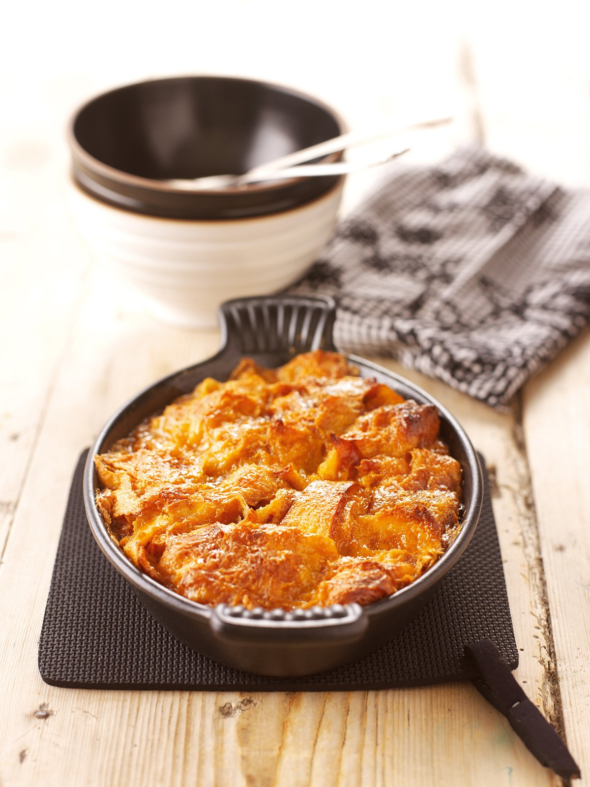

Caramel Croissant Pudding

This is such a fabulous pudding that I now think it should be every Monday night's supper.
- 2 stale croissants
- 100g caster sugar
- 2 x 15ml Tbsp water
- 125ml double cream
- 125ml full fat milk
- 2 x 15ml Tbsp bourbon
- 2 eggs, beaten
| Prep Time: | Baking Time: | Total Time: |
|---|---|---|
| 5-10 min | 20 min | 30 min |
1
Preheat the oven to 180C/gas mark 4.
2
Tear the croissants into piece and put in a small gratin dish; I use a cast iron oval one with a capacity of about 500ml for this.
3
Put the caster sugar and water into a saucepan, and swirl around to help dissolve the sugar before putting the saucepan on the hob over a medium to high heat.
4
Caramelize the sugar and water mixture by letting it bubble away, without stirring, until it all turns a deep amber colour; this will take 3-5 minutes. Keep looking but don't be too timid.
5
Turn heat down to low and add the cream -- ignoring all spluttering -- and, whisking away, the milk and bourbon. Any solid toffee that forms in the pan will dissolve easily if you keep whisking over low heat. Take off the head and, still whisking, add the beaten eggs. Pour the caramel bourbon custard over the croissants and leave to steep for 10 minutes if the croissants are very stale.
6
Place in the oven for 20 minutes and prepare to swoon.